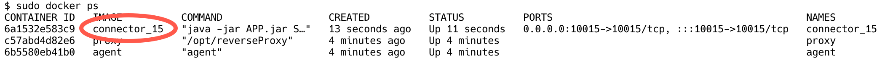
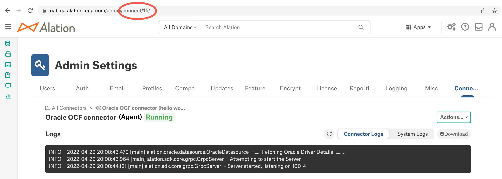
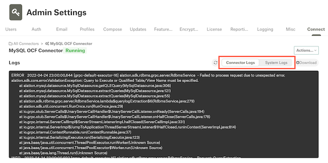

Troubleshoot the Agent¶
Alation Cloud Service Applies to Alation Cloud Service instances of Alation
This section will help you troubleshoot issues with the Agent. Issues may include:
Agent is in a “Disconnected” status.
Agent connectors are in an “Unknown” status.
Error when installing new connectors.
If network interruptions ever break the connection between the Agent and your Alation Cloud instance, the Agent will attempt to reconnect. It keeps trying to connect using an exponential backoff algorithm. Once the Agent can connect to your Alation Cloud instance again, it will reauthenticate and reestablish a secure connection.
Any jobs, such as metadata extraction, that were underway will automatically restart as long as the connection is reestablished within 30 seconds. If it takes longer than that, you’ll have to restart the job manually.
Diagnose Agent Connectivity Problems¶
Applies to Agent versions 1.5.0.2541 and later
Alation Agent versions 1.5.0.2541 and later come packaged with a suite of diagnostics that you can use to troubleshoot connectivity issues when deploying the Agent. These checks include (but are not limited to):
Operating system, memory, and CPU compatibility.
Configuration of the Agent.
Expired or revoked security certificates.
Issues related to DNS resolution and establishment of a TCP connection to Alation Cloud Service.
To use the diagnostic tools, log into the Agent host machine. Some of the most useful commands are shown below.
To get help information about the diagnostics tool:
kratos diagnostics help
To save the logs for all Agent components, including connectors, to the /tmp directory:
kratos diagnostics logs -o /tmp
To get a list of available diagnostics:
kratos diagnostics list
To run all diagnostics and save the results to a file:
kratos diagnostics run >> agent_diagnostics.yaml
You can send the resulting file, which includes the output logs of the diagnostics, to Alation Support to enable faster diagnosis of Agent connectivity problems.
Check the System Requirements¶
Verify that the Agent’s host machine meets the Agent System Requirements.
Check the Agent Version¶
Ensure that you have installed the latest version of the Agent.
On the Agent host machine, check the installed Agent’s version by running:
hydra versionThe version number will be in the first line of the output.
Go to the Alation Customer Portal. If prompted, log in.
On the Alation Customer Portal, check the latest version number under the Version column. If it’s newer than the Agent you have installed, upgrade the Agent.
Check the Agent’s Status¶
As a troubleshooting step, or when starting and stopping the Agent, you may want to check the Agent’s status.
Agent Status in Alation¶
In Alation, you can check the Agent’s connection status by visiting Admin Settings > Manage Connectors > Agents Dashboard. The Agent’s Status tells you if your Alation Cloud instance can reach the Agent’s reverse proxy component. This does not necessarily indicate that the Alation Connector Manager component or the connectors are running.
Agent Status on the Agent’s Machine¶
You can check the status of the Agent’s individual components on the Agent’s host machine. To check the status, run the following command:
sudo docker ps
This command will output a list of running Docker containers. A normally functioning Agent will show several containers:
agent: This is the Alation Connector Manager component of the Agent.
proxy: This is the reverse proxy component of the Agent.
connector_[n]: Each connector will be listed with n representing the connector’s ID.
You can correlate the ID with the connectors on the Connectors Dashboard in Alation by clicking on a connector and viewing its URL.

If any components are missing from the list, that means they are not running. You can try to start the components back up by running sudo hydra restart on the Agent machine. Then run sudo docker ps again to check the status.
Check the Certificates¶
If the Agent shows as disconnected, it may be that the Agent’s certificates have expired or been revoked. The certificates expire automatically after one year.
To check if the Agent has valid certificates, see View the Certificates’ Expiration Date. If the Agent does not have valid certificates, see Renew the Certificates to reestablish the connection. Do not add a new Agent, as doing so will not solve problems with certificates and may cause additional problems.
Update the Agent’s Address Configuration¶
Alation Cloud Service Applies to Alation Cloud Service instances of Alation
You may need to update the Agent’s address configuration if the Agent is in a disconnected status. This may happen if the Agent was set up incorrectly or if you’re an Alation Cloud Service customer who’s been upgraded to the cloud native architecture (available starting in 2022.4).
To update the Agent’s address configuration, first you need to get the correct connectivity endpoint of your Alation Cloud Service instance. Then you need to enter the endpoint into the Agent’s configuration file. This process is described in detail below.
Get the Alation Cloud Service Connectivity Endpoint¶
You can get the Alation Cloud Service connectivity endpoint by starting, but not finishing, the Agent installation process within Alation:
In Alation, click on the Settings gear icon in the top right corner. This opens the Admin Settings page.

Under the Server Admin section, click Manage Connectors.

Click the Agents tab. The Agents Dashboard appears.
Click the Add New Agent button.

The Add New Agent dialog will appear.
The first step of the installation process will show connectivity endpoint between quotes on the
addressline.
Save the connectivity endpoint in a secure location for later use. Then click the X button to exit the Add New Agent dialog. (You should not install or reinstall an Agent now.)
Allow the Connectivity Endpoint¶
If your organization uses a Web Application Firewall (WAF), inform your firewall admin to allow the Alation Cloud Service connectivity endpoint to pass through.
Edit the Agent Configuration File¶
Now that you have the correct connectivity endpoint of your Alation Cloud Service instance, you need to enter the address into the Agent’s configuration file.
The Agent configuration file is located on the Agent host machine at /etc/hydra/hydra.toml. Edit the file using your preferred text editor. You may need to use sudo privileges.
In hydra.toml, look for the
addressline. Replace the address value inside the quotation marks with the Alation Cloud Service connectivity endpoint you obtained earlier. If the address is already correct, you don’t need to do anything else.Restart the agent by running the following command:
sudo hydra restart
In Alation, return to the Agents Dashboard and verify that the Agent is now connected to Alation.
Check Agent Error Messages¶
To view Agent error messages, run the following command on the Agent’s host machine:
sudo systemctl status hydra.service
Check Logs¶
Each component of the Agent writes its own logs on the Agent host machine. Each connector that’s installed on the Agent also has its own logs. On the Agent machine, you can get an archive of all logs or check the logs for each component and connector separately. Connector logs are also available directly in Alation.
All Logs¶
You can get an archive of all Agent component logs, including connector logs, using the Agent diagnostics tool on the Agent machine.
To save all Agent logs to the current working directory:
kratos diagnostics logs
To save all Agent logs to a specified directory:
kratos diagnostics logs -o /tmp
Agent Component Logs¶
To check the Agent’s logs, you’ll need to know the name of the Docker container for the component you’re checking. To get the names of the containers, run the following command on the Agent’s host machine:
sudo docker ps
In the output, look under the NAMES column.
agent: This is the Alation Connector Manager component of the Agent.
proxy: This is the reverse proxy component of the Agent.
connector_[n]: Each connector will be listed with n representing the connector’s ID.
You can correlate the ID with the connectors on the Connectors Dashboard in Alation by clicking on a connector and viewing its URL.
Access the logs using the docker logs command followed by the name of the container. For example:
# tail logs for Alation Connector Manager component
docker logs -f agent
# tail logs for reverse proxy component
docker logs -f proxy
# save logs to a file
docker logs agent >& agent.logs 2>&1
docker logs proxy >& agent.logs 2>&1
Connector Logs¶
Each OCF connector has logs that record information about actions such as metadata extraction and query log ingestion. Logs for OCF connectors installed on the Agent are available from the Connectors Dashboard. The Logs area displays seven days or 1,000 lines of logs. You must be a Server Admin to see the Connectors Dashboard.
To view OCF connector logs in Alation:
In Alation, click on the Settings gear icon in the top right corner. This opens the Admin Settings page.
Under the Server Admin section, click Manage Connectors.
Click the connector whose logs you want to see.
Choose whether you want to see Connector Logs or System Logs.
Note
The option to download connector logs is not supported for Agent connectors.
To view OCF connector logs on the Agent’s host machine:
Get the ID of the connector by running
kratos listand looking for the “id” field. Or runsudo docker psand look for the number following the underscore in the container name.Use the commands below to work with the connector logs as desired:
# Tail logs kratos tail <ID> # Get full logs kratos logs <ID> # Get logs from a specific date kratos logs --since 2020-08-15 <ID> # Redirect logs to a file kratos logs <ID> > connector_3.log 2>&1